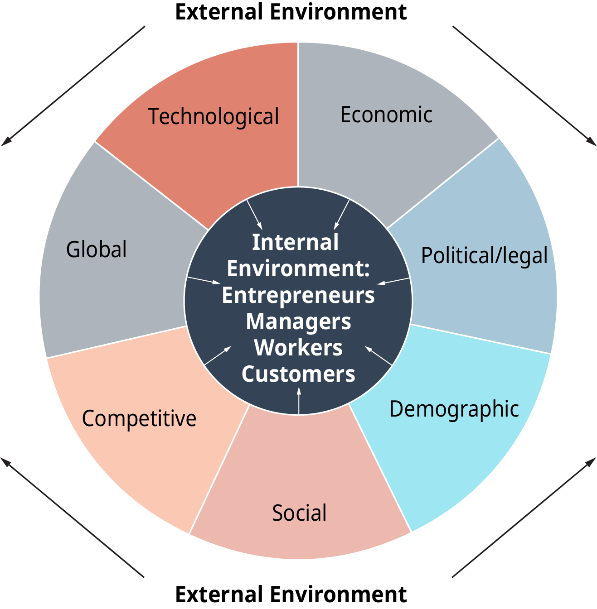
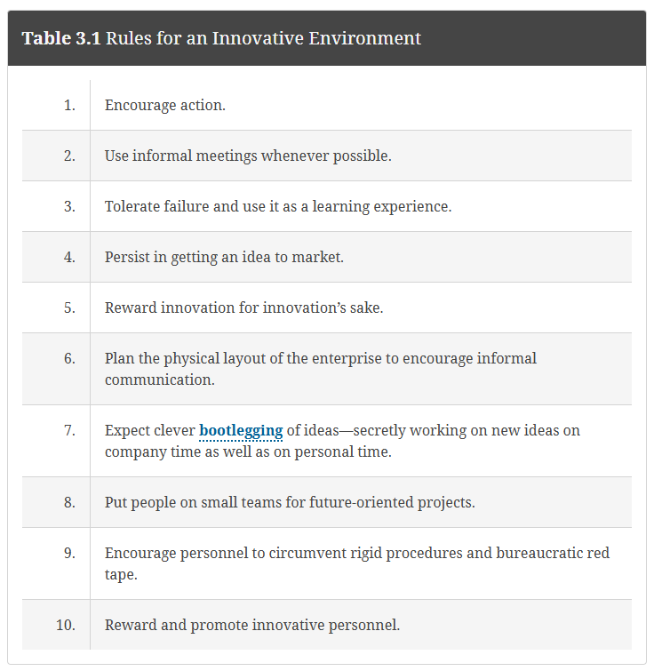
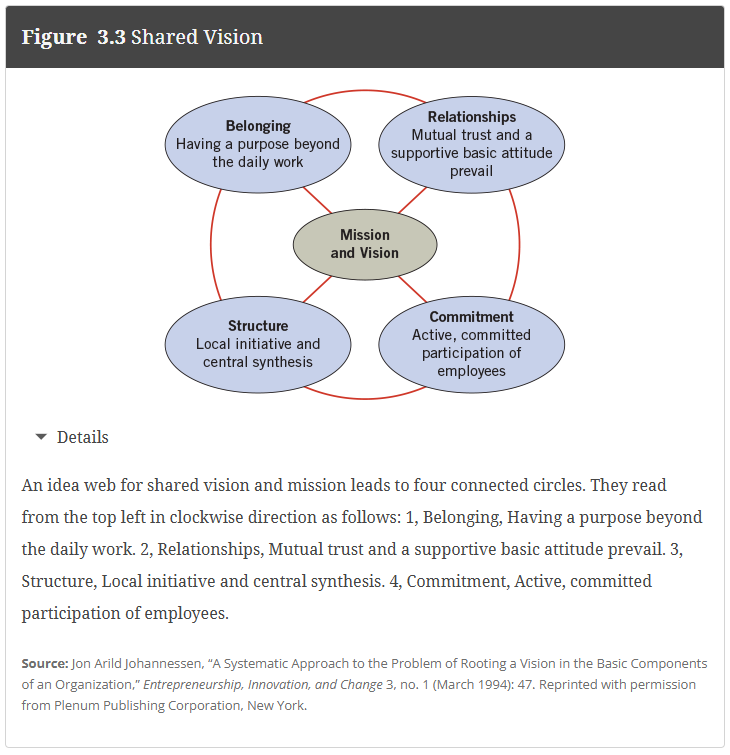
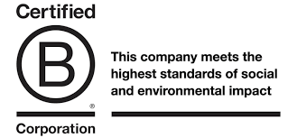
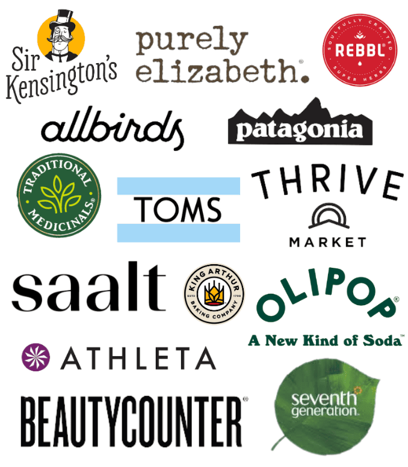

September 9, 2025
A leader has two important characteristics; first, he is going somewhere; second, he is able to persuade other people to go with him.
-Maximilien François Marie Isidore de Robespierre
Textbook Reading (Quiz Basis)
Chapter 3. The Entrepreneurial Mindset in Organizations: Corporate Entrepreneurship
Chapter 4. The Global Entrepreneurial Mindset: Social Entrepreneurship
Lecture Agenda
Source: Kuratko (2024)
By the end of this section you should be able to:
- 3.1 Define the entrepreneurial mindset within organizations.
- 3.2 Explain why entrepreneurial thinking is needed in corporations.
- 3.3 Define corporate entrepreneurship.
- 3.4 Identify obstacles that block innovation.
- 3.5 Summarize how to reengineer corporate thinking.
- 3.6 Describe the elements of a corporate entrepreneurial strategy.
- 3.7 Explain how managers develop entrepreneurial skills inside firms.
- 3.8 Illustrate how corporate entrepreneurship is an interactive process.
By the end of this section you should be able to:
- 4.1 Define social entrepreneurship.
- 4.2 Identify traits of social entrepreneurs.
- 4.3 Explain shared value and benefit corporations.
- 4.4 Explore challenges in poverty, sustainability, and global markets.
Have you set up a time to have your first mentor meeting?
Recording studio slots fill quickly! They must be recorded by Nov 10th.
Field trip to Denver Food Trade Show on Oct 2nd (2 spots remaining)
Student internship for credit (1 spot remaining)
Can corporations have an entrepreneurial mindset?
Corporations face rapid and unpredictable change.
To compete, they:
Definition: Corporate Entrepreneurship (Intrapreneurship)
New venture creation or strategic renewal inside an existing firm. The infusion of entrepreneurial thinking and innovation inside larger, corporate enterprises.
Example companies: Google, 3M, Amazon, Tesla, Procter & Gamble, Abbott
Why companies pursue it:
- New competitors emerging.
- Traditional management methods distrusted.
- Talent leaving to start their own businesses.
- International competition & downsizing.
- Desire for higher efficiency/productivity.
 View original
Practices that build an innovation-driven company:
Definition: Corporate Innovation
Developing entrepreneurial spirit, generating new ideas and behaviors.
Practices that build an innovation-driven class:
Set clear innovation goals.
→ In class: Your innovation goal is to produce a professional podcast episode with your mentor.
What smaller steps will get you there? (planning, interviewing, editing)
Create a system of feedback and positive reinforcement.
→ In class: You’ll get feedback from your mentor, peers, and me.
How can you encourage each other to take risks and try new approaches?
Emphasize individual responsibility.
→ In class: Each team member has a role in the podcast.
How do confidence, trust, and accountability show up in your group?
Provide rewards for innovative ideas.
→ In class: Creative approaches (unique interview angles, strong storytelling) will shine through in your final product and class presentations.
Don’t punish failure.
→ In class: Experiments might not work (tech glitches, awkward questions).
How can you turn these into learning moments instead of setbacks?
Apply it to your own experience
Which practice would motivate you most working in an organization?
A. Having clear innovation goals.
B. Receiving feedback and positive reinforcement.
C. Being rewarded for innovative ideas.
D. Having freedom to work independently.
E. Having guardrails to fail safely.
If you find yourself craving a workplace where entrepreneurial thinking is encouraged, use these questions to determine if your organization supports that mindset:
☐ Does the company encourage entrepreneurial thinking?
☐ Does the company provide ways for innovators to stay (not abandon) with their ideas?
☐ Are people in the company permitted to do the job on their own, or are they constantly stopping to explain their actions and ask for permission?
☐ Has the company evolved quick and informal ways to access the resources to try new ideas?
☐ Has the company developed ways to manage many small and experimental innovations?
☐ Is the system set up to encourage risk taking and to tolerate mistakes?
☐ Are people in our company more concerned with new ideas or with defending their turf?
☐ How easy is it to form functionally complete, autonomous teams in our corporate environments?
Alternatively, an innovative corporate environment may be built around the application of rules for innovation.
This is the result of a corporate philosophy that supports innovative behavior.

Connection to Corporate Innovation:
Definition: Incubator
An incubator is a program that supports early-stage startups by providing resources such as mentorship, funding, networking, and workspace to help them grow.
Now that we understand the value and culture of entrepreneurship within organizations, how do companies actually structure it?
Example: Tyson Foods investing in plant-based protein startups.
Definition: Corporate Venturing
Creating or investing in new businesses within or alongside the corporation to generate growth and innovation.
Example: General Mills shifting resources toward healthier snack lines to adapt to consumer demand.
Definition: Strategic Entrepreneurship
Using entrepreneurial thinking to renew and reshape an existing organization’s strategy, products, or operations.
Traditional practice → Problem created → Better approach
| Traditional Practice | Problem It Creates | Better Approach |
|---|---|---|
| Enforcing rigid procedures | Blocks innovation | Make rules flexible for each situation |
| Managing only for efficiency & ROI | Competitive lead lost, weak market presence | Focus effort on critical issues (e.g., market share) |
| Planning for the long term only | Nonviable goals, high costs of failure | Set interim milestones and reassess often |
| Protecting the base business at all costs | Missed opportunities | Take small, affordable risks |
| Promoting only “compatible” individuals | Loss of innovators (“boat rockers”) | Support innovators and risk-takers |
Note: These examples are selected from Table 3.2 in Kuratko (2024). See the textbook for the complete list.
Factors:
Definition: Corporate Entrepreneurship Strategy
A vision-directed, organization-wide reliance on entrepreneurial behavior that purposefully and continuously rejuvenates the organization and shapes the scope of its oeprations through the recognition and exploitation of entrepreneurial opportunity.

Think of a social cause you care about (local or global).
How could a business help solve it?
Definition: Social Entrepreneurship
A form of entrepreneurship that exhibits characteristics of nonprofits, governments, and businesses, combining private-sector focus on innovation, risk taking, and large-scale transformation with social problem solving.
Definition: Social Entrepreneur
A person (or group of individuals) who founds and/or leads an organization or initiative engaged in social entrepreneurship
Consumer Brands with Activism
Food Access & Waste Reduction
Global Social Ventures

How certification works

Shared Value → Business creates economic value while also solving social or environmental problems.
Example: Nestlé developing fortified foods for low-income markets.
Triple Bottom Line (TBL) → Success measured not just by profit, but by balancing:
Why it matters:
If TBL guides decisions, projects with higher social and environmental returns are more likely to get funded, even if short-term profits are lower.
If firms claim to create shared value or follow the TBL, how do we know it’s real?
Impact can be measured in several ways:
Civic wealth / community well-being
→ e.g., increase in local jobs, education, resilience
Scale breadth (reach more people)
→ e.g., number of households receiving affordable produce
Scale depth (deepen services to current users)
→ e.g., improving nutrition or health outcomes for the same group
Extent of social change
→ e.g., long-term reduction in food insecurity or child labor
Takeaway: Measuring social impact makes TBL and Shared Value actionable, not just slogans.
Before expanding internationally, social entrepreneurs should evaluate:
| Area | Key Question | Example |
|---|---|---|
| Importing & Exporting | Are there tariffs, trade restrictions, or infrastructure challenges? | Misfits Market explored selling surplus food abroad but faced high logistics costs and strict import regulations. |
| International Alliances & Joint Ventures | Who are the trusted local partners that can help adapt the model? | World Central Kitchen partners with local chefs and restaurants in disaster zones to scale relief efforts. |
| Direct Foreign Investment | What are the risks of owning facilities or operations abroad? | Oatly invested in overseas production plants (U.S., Singapore) to meet global demand while maintaining brand consistency. |
| Licensing | Can technology, trademarks, or processes be adapted by others? | Driptech licensed its low-cost irrigation technology to local distributors to reach smallholder farmers in India and China. |
| Researching Foreign Markets | How do local culture, regulations, and consumer needs affect expansion? | Tony’s Chocolonely studied European vs. U.S. consumer attitudes toward “fair trade” chocolate before expanding. |
Takeaway: Expanding globally is not just about scaling up — it requires adapting the mission to new political, economic, and cultural contexts.
Time: 30 minutes
Format: Work with your pods
Instructions (23-25 minutes)
Debrief (5–7 minutes)
Social Entrepreneurship Process
Social Enterprises
Definition: Social Value
Social value is the positive impact created for society when organizations address community, environmental, or social needs.
It goes beyond financial profit to include benefits such as improved well-being, reduced inequality, stronger communities, and a healthier environment.